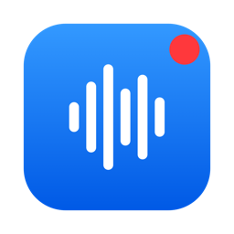
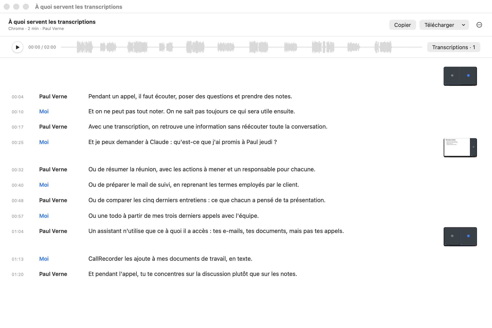
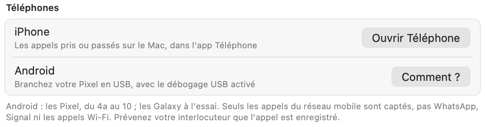
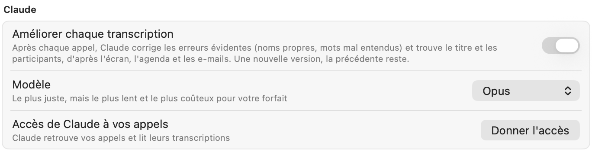
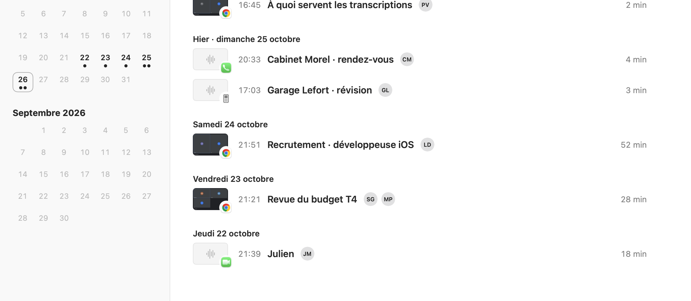
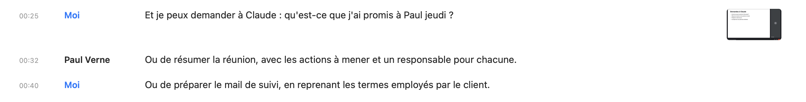
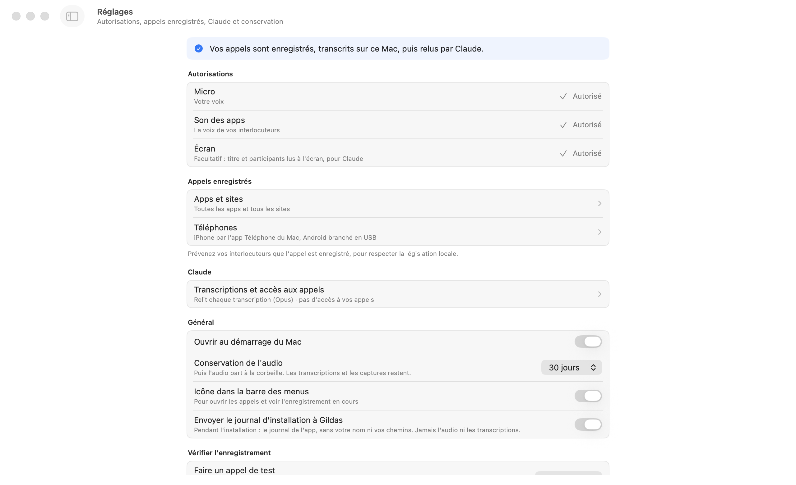
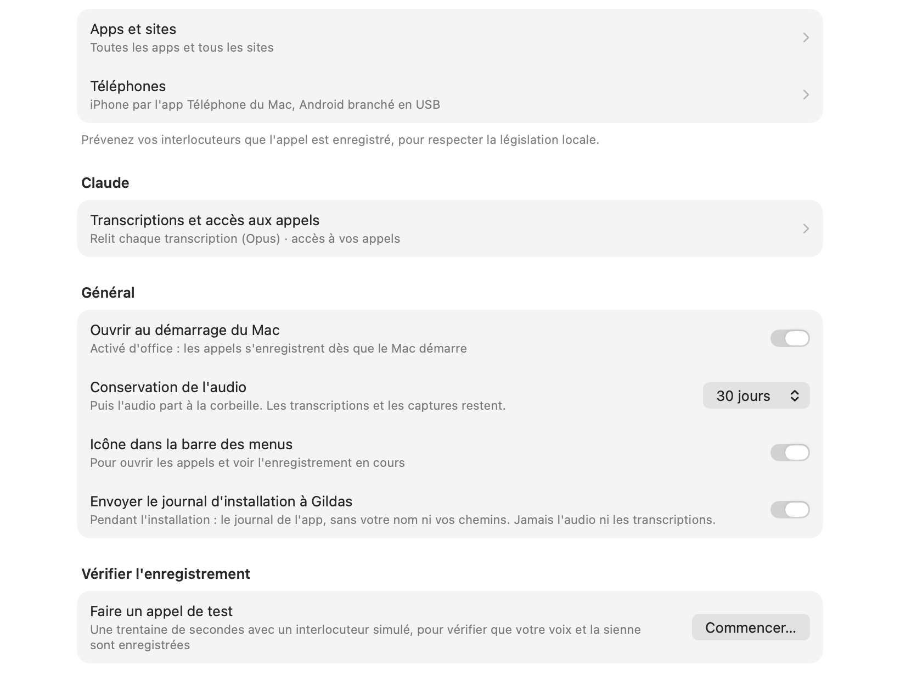
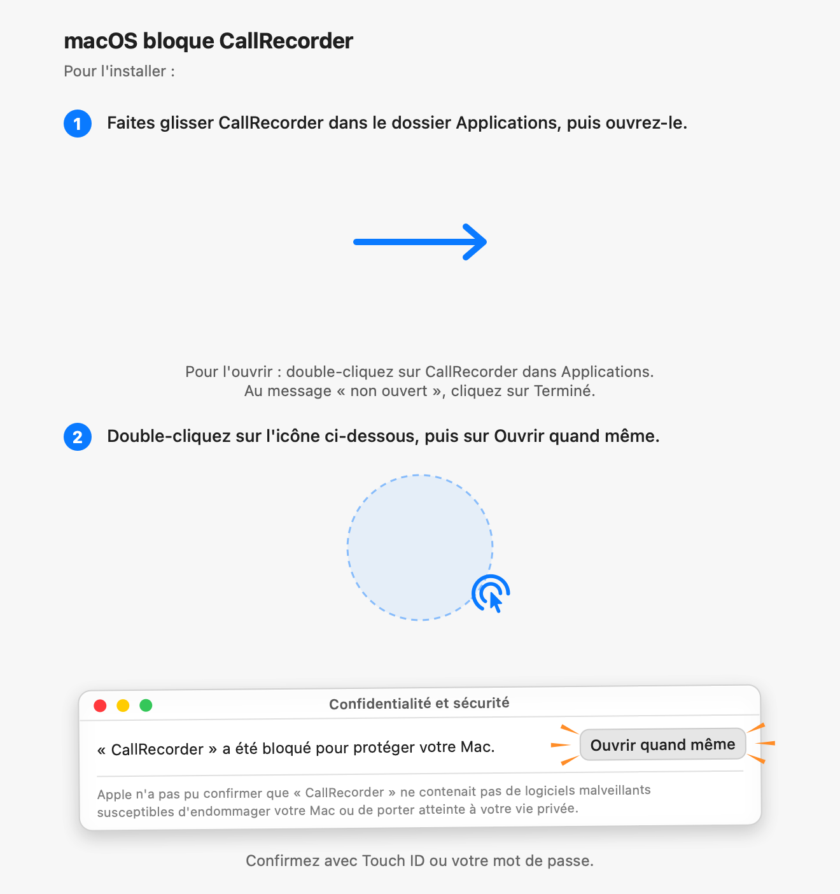

CallRecorder enregistre tous vos appels et en fait un fichier texte compatible avec Claude.

Installer CallRecordermacOS 15 ou plus récent · Mac M1 ou plus récent




Gardez la trace de vos appels.
CallRecorder démarre l'enregistrement lorsqu'une application d'appel utilise le micro et l'arrête à la fin de l'appel. La transcription est ensuite disponible sur votre Mac.
Vous n'avez rien à paramétrer, rien à lancer
Pas de bouton à cliquer au début de chaque réunion. CallRecorder détecte l'utilisation du micro par les applications prises en charge. Siri et la dictée ne déclenchent pas d'enregistrement.
Vos appels téléphoniques aussi
Les appels de l'iPhone pris ou passés sur le Mac, dans l'app Téléphone. Et ceux d'un Pixel branché en USB, avec le numéro et le nom de l'interlocuteur. Comment faire
Les transcriptions restent sur votre Mac
La transcription est effectuée par votre Mac : par la reconnaissance vocale d'Apple sur macOS 26, et par Whisper pour la qualité max, plus juste sur les noms et le jargon. L'audio n'est pas envoyé sur Internet, et les captures d'écran qui servent à comprendre le contexte non plus, sauf si vous activez l'option  Claude.
Claude.
Vos propos et ceux des autres sont séparés
CallRecorder enregistre séparément le son de votre micro et celui de votre application d'appel. La transcription distingue vos propos de ceux des autres participants.
Retrouvez le titre et les participants
En option, Claude peut utiliser le contenu de la fenêtre d'appel avec votre agenda et vos e-mails pour retrouver les informations utiles à la transcription, comme le sujet de la réunion et les participants.
Retrouvez vos appels avec Claude
Claude peut rechercher un appel, lire sa transcription, en faire un résumé ou préparer un compte rendu et un e-mail de suivi. Tous les assistants compatibles avec MCP peuvent accéder aux transcriptions si vous leur en donnez l'accès.
L'audio part à la corbeille au bout de 7 jours
Sauf si vous choisissez de le conserver. Les transcriptions et les captures d'écran restent, sauf si vous supprimez l'appel.
L'application reste dans la barre des menus
CallRecorder n'apparaît pas dans le Dock. Vous pouvez arrêter ou supprimer un enregistrement en cliquant sur l'icône.
Pas de compte ni de serveur
Les fichiers audio et les transcriptions sont enregistrés dans un dossier sur votre Mac.
Installation
Un assistant vous guide dans les autorisations de macOS, puis vérifie l'enregistrement avec un appel de test. Suivez-le jusqu'au bout : sans autorisation, CallRecorder ne peut pas enregistrer.
macOS 15 ou plus récent · Mac M1 ou plus récent
Glissez CallRecorder dans Applications et ouvrez-le. macOS affiche un avertissement, car l'app n'est pas distribuée par l'App Store : autorisez son ouverture dans Réglages Système > Confidentialité et sécurité.
Avec le Terminal
curl -fsSL https://github.com/gildasfremont/callrecorder-site/releases/latest/download/install.sh | zshSur macOS 26, la transcription utilise la reconnaissance vocale d'Apple : rien de plus à télécharger. Sur macOS 15, et pour la qualité max, le modèle Whisper (0,6 Go) se télécharge.
Guides
Les questions qu'on se pose une fois CallRecorder installé.
Enregistrer les appels de l'iPhone
CallRecorder enregistre les appels de l'iPhone que vous prenez ou passez sur le Mac, dans l'app Téléphone : leur son passe par le micro et les haut-parleurs du Mac.
- Sur l'iPhone, ouvrez Réglages > Téléphone > Appels sur d'autres appareils, et cochez votre Mac. Les deux appareils doivent utiliser le même compte Apple.
- Sur le Mac, appelez depuis l'app Téléphone, ou décrochez l'appel qui s'y affiche.
Un appel décroché sur l'iPhone lui-même ne passe pas par le Mac : il n'est pas enregistré.

Enregistrer les appels d'un téléphone Android
Rien à installer sur le Mac. L'appel reste sur le téléphone : branché au Mac en USB, il lui transmet la voix des deux côtés. Les Pixel, du 4a au 10, sont pris en charge ; les Galaxy sont à l'essai.
- Sur le téléphone, ouvrez Paramètres > À propos du téléphone et touchez sept fois Numéro de build, puis activez le Débogage USB dans Paramètres > Système > Options pour les développeurs.
- Branchez le téléphone au Mac et acceptez « Autoriser le débogage USB ». La ligne Android affiche Prêt.
Seuls les appels du réseau mobile sont captés : pas WhatsApp, Signal ni les appels Wi-Fi. Le numéro et le nom de l'interlocuteur sont repris du journal d'appels du téléphone, même s'il est rebranché après l'appel.
Donner à Claude l'accès à vos appels
- Dans la configuration, ligne Accès de Claude à vos appels, cliquez sur Activer : Claude Code et Claude Desktop sont reliés à vos appels.
- Quittez et rouvrez Claude.
- Demandez-lui par exemple : « Qu'est-ce que j'ai promis à Paul jeudi ? »
Pour ChatGPT, Cursor ou un autre assistant compatible MCP, l'assistant de configuration donne la consigne et la configuration MCP à copier dans ses réglages.

Retrouver et réécouter un appel
Cliquez sur l'icône de CallRecorder dans la barre des menus, puis sur Appels…. Le calendrier, à gauche, mène à un jour. Cliquez sur un appel pour ouvrir sa fenêtre : la lecture est en haut, et un clic sur la forme d'onde ou sur une réplique va au bon moment.

Transcrire en qualité max
La qualité max est plus juste sur les noms propres et le jargon, mais plus lente. Dans la fenêtre de l'appel, cliquez sur Transcriptions, au bout de l'enregistrement, puis sur Nouvelle transcription… et choisissez la qualité max. Vérifiez les noms et les mots à reconnaître, ou cliquez sur Faire remplir par Claude, puis sur Lancer. Son modèle (0,6 Go) se télécharge la première fois ; les transcriptions précédentes restent dans la liste.

Copier ou exporter une transcription
Dans la fenêtre de l'appel, Copier met toute la transcription dans le presse-papiers. Télécharger l'enregistre en texte, Word, Markdown ou sous-titres. Les transcriptions sont aussi dans le dossier CallRecordings de votre dossier personnel, en Markdown.
Garder l'enregistrement audio d'un appel
L'audio part à la corbeille au bout de 7 jours ; la transcription et les captures restent. Le menu ⋯ de la fenêtre de l'appel indique la date. Pour garder l'audio, demandez-le à Claude (« Garde l'enregistrement de cet appel ») ou tapez calls keep suivi de l'identifiant de l'appel dans le Terminal.
Arrêter ou supprimer un enregistrement
Pendant l'appel, cliquez sur l'icône de CallRecorder dans la barre des menus : Arrêter termine l'enregistrement, Supprimer cet appel l'efface. Après l'appel, survolez-le dans la fenêtre Appels et cliquez sur la corbeille : vous avez 5 secondes pour annuler. Le menu ⋯ de sa fenêtre permet aussi de le supprimer.
Revoir les autorisations
Icône de CallRecorder > Configuration… Chaque autorisation s'y active ou se retire. Quand Réglages Système s'ouvre, un petit panneau s'y colle pour indiquer quoi faire.

Versions
CallRecorder se met à jour tout seul. Pour vérifier tout de suite : icône de CallRecorder > Rechercher une mise à jour.
Une ligne par appel, avec sa première capture, l'app et la durée. Fenêtre de l'appel : la transcription calée sur l'enregistrement, les captures à côté des répliques, les silences visibles, un texte plus lisible. Plusieurs transcriptions par appel ; une nouvelle se prépare au centre de la fenêtre, avec les mots à reconnaître et Faire remplir par Claude, et on la regarde se faire. Nombreuses corrections.

Cartes des appels : toute la carte ouvre la fenêtre de l'appel, avec un extrait de quelques répliques. Fenêtre de l'appel : les captures dans une colonne à droite, les répliques espacées selon le temps écoulé.
Les appels Android s'enregistrent sans rien installer : l'outil scrcpy est livré dans l'app.
Appels Android : le numéro et le nom de l'interlocuteur, retrouvés même quand le téléphone est rebranché après l'appel.
Enregistre les appels de l'iPhone (app Téléphone du Mac) et des Pixel branchés en USB. Transcription rapide par la reconnaissance vocale d'Apple sur macOS 26 ; qualité max par Whisper, nourrie des mots lus à l'écran.


Nouvelle fenêtre des appels : calendrier, cartes avec l'enregistrement à écouter, les captures et un extrait de la transcription. Une fenêtre par appel, avec la transcription liée à l'enregistrement, les captures, la copie et l'export. Après 7 jours, seul l'audio part à la corbeille. Suppression d'un appel annulable pendant 5 secondes.
Fond de l'installation simplifié.


Un panneau collé à Réglages Système indique quoi faire pour chaque autorisation. Claude relancé après la connexion, assistant remis au premier plan, journal d'installation (désactivable), répliques mieux découpées.
Relance fiable après une mise à jour.
Relance fiable après l'autorisation de l'écran.
Enregistre aussi les appels Slack, Webex et Loom.
Première version publique : enregistrement automatique, transcription sur le Mac, assistant de configuration avec appel de test.